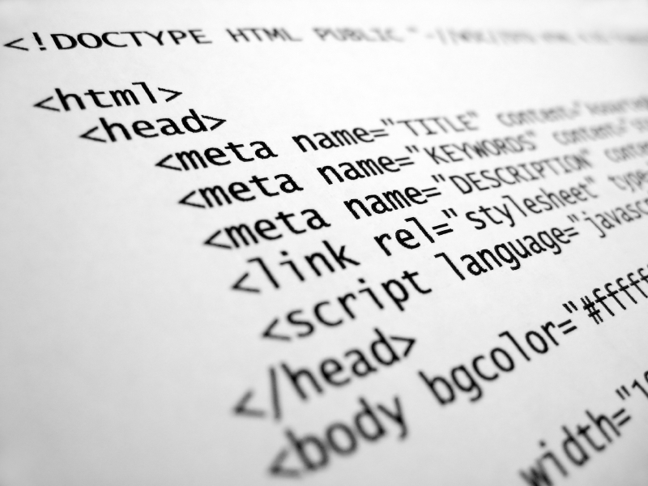

Верстаю по методологии БЭМ, это значит что Ваш сайт будет лёгок во всех будущих изменениях.
Адаптивный веб-дизайн
— дизайн веб-страниц, обеспечивающий корректное отображение сайта на различных устройствах, подключённых к интернету и динамически подстраивающийся под заданные размеры окна браузера.
Целью адаптивного веб-дизайна является универсальность веб-сайта для различных устройств. Для того, чтобы веб-сайт был удобно просматриваемым с устройств различных разрешений и форматов, по технологии адаптивного веб-дизайна не нужно создавать отдельные версии веб-сайта для отдельных видов устройств. Один сайт может работать на смартфоне, планшете, ноутбуке и телевизоре с выходом в интернет, то есть на всем спектре устройств.
Кроссбраузерность
— свойство сайта отображаться и работать во всех популярных браузерах идентично.
